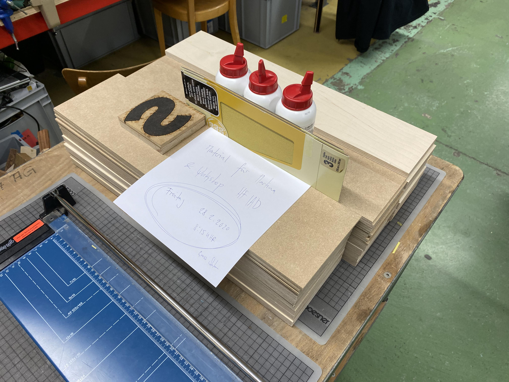
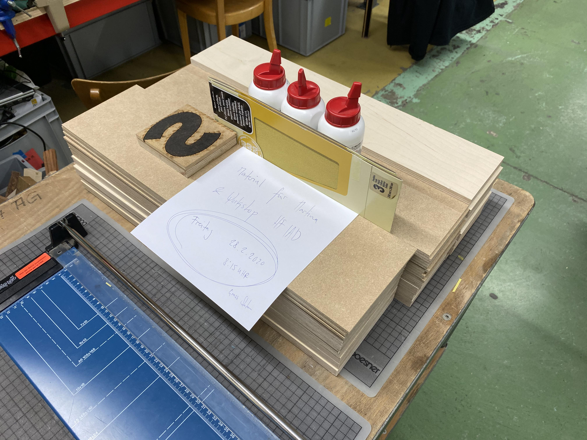

Info · Fablab
ACHTUNG!!!
Wir produzieren wie ein Stempel. Damit nach dem Drucken alles richtig ist, muss der «Stempel» spiegelverkehrt sein!!! Also spiegelverkehrt aufkleben, seitenrichtig lasern.
Pro Person
- 1 Buchstaben gross
- 3 Buchstaben klein
Material
 

Buchstaben klein (~24 Cicero)
- 12 × Sperrholz Birke 18 mm · Dicke: 18 mm, L × B: 550 × 108 mm
- 12 × Oecoplan MDF 5 mm · Dicke: 5 mm, L × B: 550 × 108 mm
Buchstaben gross (~32 Cicero)
- 6 × Sperrholz Birke 18 mm · Dicke: 18 mm, L × B: 550 × 144 mm
- 6 × Oecoplan MDF 5 mm · Dicke: 5 mm, L × B: 550 × 144 mm
Sonstiges
- 3 × Holzleim
- 2 × Schleifpapier-Pack
- 1 × Buchstaben-Muster
Anleitung
Datei (mit Stefan Huber)
- Dateien als .ai-Files auf das richtige Format vorbereiten. AI3 abspeichern.
- Die einzelnen Buchstaben sind durch eine Linie abgetrennt
Datei für Laser vorbereiten
Instruktion siehe Wiki.

Material rechtwinklig (!) platzieren
Ob etwas im rechten Winel steht, kann auch mit dem Laser (Nullpunkt) geprüft werden.

brzzzz...
AKJ 6090 – 6 mm/s – 75 % Energie
Ist aber eher zuviel. Bitte Test machen!

Länge auf Träger anzeichnen

Träger ablängen
Auchtung! Die Säge ist gefährlich! Bitte Haare, Ketten etc. zurückbinden und immer ein Holz verwenden um sei Werkstuck zu schieben. Achtung Hände!

Aufleimen mit Hilfe vom «Abfall»
Achtung!!! Spiegelverkehrt aufkleben! Kennst du den Nageltrick?

«Abfall» vor Trocknung abziehen